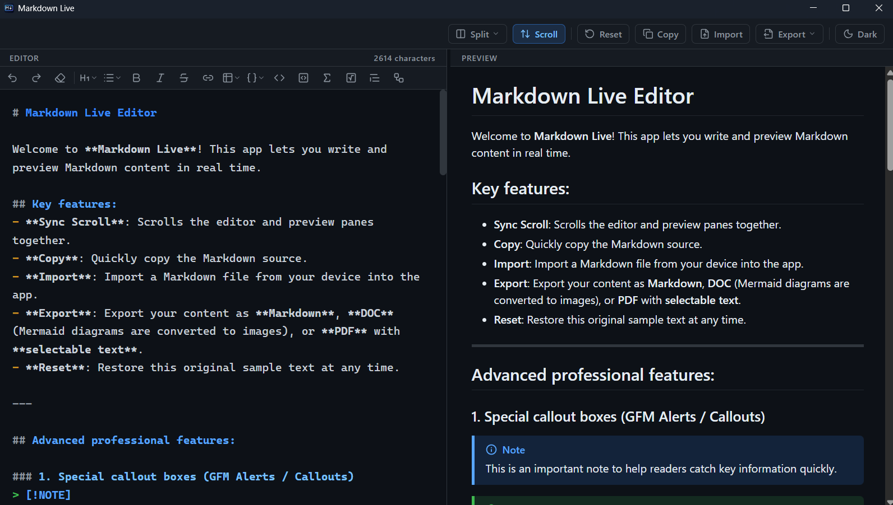
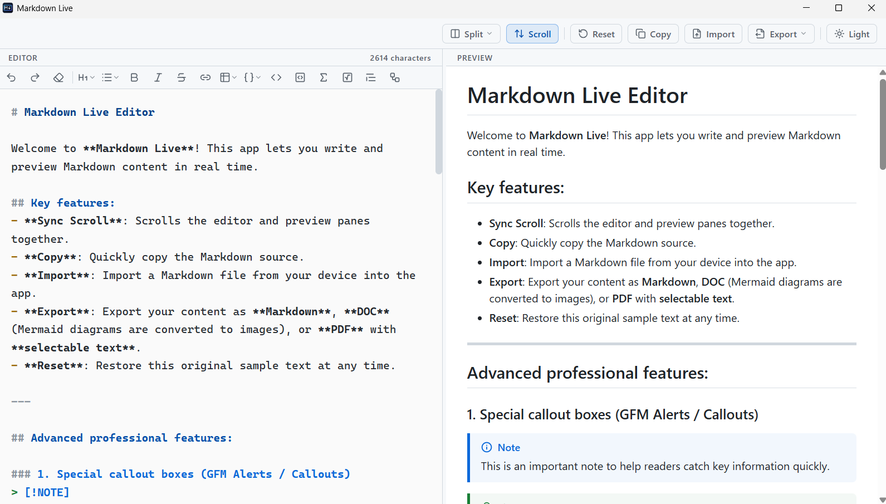

Reports & theses
Equations, tables and diagrams in one file. Export to Word and hand it in.
Free & open source · Works offline
Markdown Live is a small desktop editor for Windows that turns plain text into a formatted page as you type with equations, diagrams, tables and highlighted code. Export it to Word or PDF. It never needs the internet.
Windows 10/11 64-bit · nothing to install · MIT licence
01 — Two-pane editing
You type on the left and the finished page appears on the right, updated as you type. Drag the divider to give either side more room push it all the way to an edge and the app goes full width on that side.
Equations, tables and diagrams in one file. Export to Word and hand it in.
Specs and documentation with highlighted code, previewed while you type.
Draft offline, then export to HTML or Markdown and publish it anywhere.
02 — Features
Equations, diagrams and callout boxes are written straight into your text, so they show up in the preview and travel with you into every export nothing to rebuild, nothing to paste as a picture.
$E = mc^2$ and display blocks
flowchart · sequence · ERD
NOTE TIP WARNING
A .doc file that Microsoft Word opens. Mermaid diagrams become images automatically.
Real vector text: selectable, searchable, copyable not a picture of your page.
One self-contained file for any browser, or for a website to publish.
Your text back out unchanged, for Git, a blog or a static site.
03 — Why it stays out of your way
Starting up takes under a tenth of a second, idle it sits at about 5 MB of memory, and it sends nothing over the network no account, no analytics, no upload. One reason it can afford that: Tauri v2 draws through the WebView that already ships with Windows instead of bundling a second browser.
Download size. A typical Electron app ships a whole extra copy of Chromium, check the numbers for yourself before taking anyone else's word for it.
04 — Get the app


No. The toolbar above the editor has buttons for headings, bold, lists, tables, links, code, quotes, maths and diagrams, press a button and it writes the syntax for you. If you do know Markdown, just type it: the preview keeps up with you.
Yes — free and open source under the MIT licence. No account, no trial, no ads, no telemetry. Your documents are never uploaded anywhere.
No. After the first download Markdown Live runs completely offline on a plane, or with the cable unplugged.
On the Releases page, pick the .exe whose name contains portable. It is about 13 MB and runs on Windows 10 and 11, 64-bit. If a .msi installer shows up next to it, either one works, but the portable file is the one to grab.
Expected. The project is open source and not digitally signed, so Windows shows an “Unknown publisher” warning. Click More info and then Run anyway.
If double-clicking does nothing, right-click the file → Properties → tick Unblock → Apply → OK.
Yes. Press Import in the top bar and choose a .md, .markdown or .txt file. Exporting back to .md gives you your text exactly as it was.
The editor saves your text and your last view mode on this machine and restores them the next time you launch. Export to a file as well if you want a copy of your own.
Not yet — Windows 10/11 64-bit is the only build for now.
Download Source code Tiếng Việt Free and open source (MIT) · no accounts · no tracking